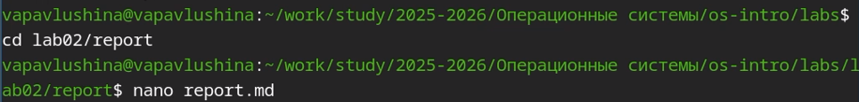
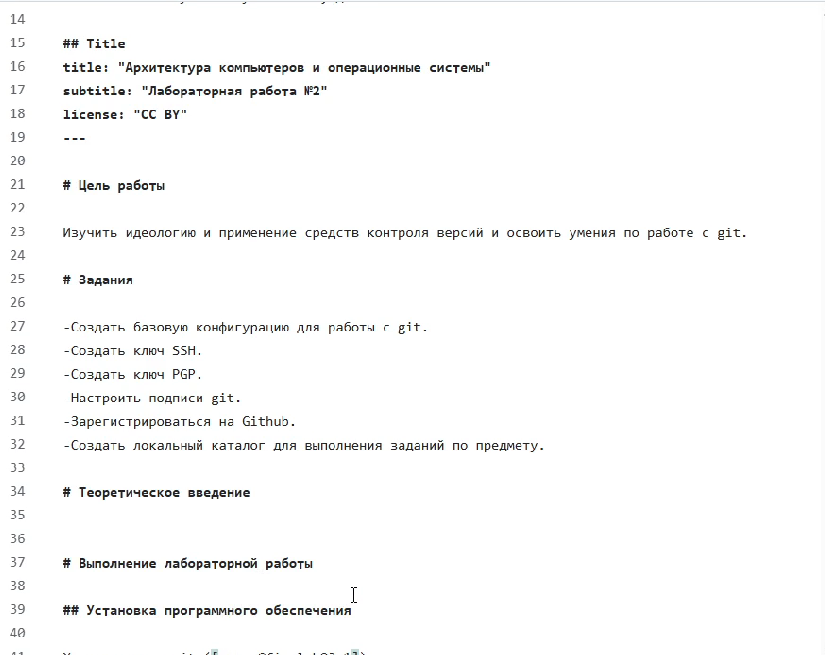
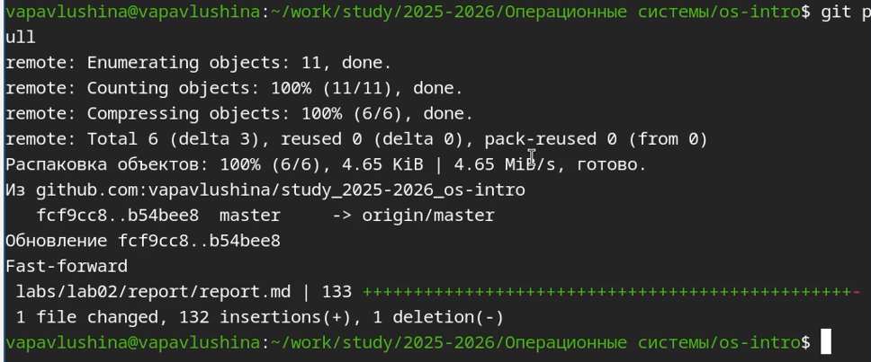
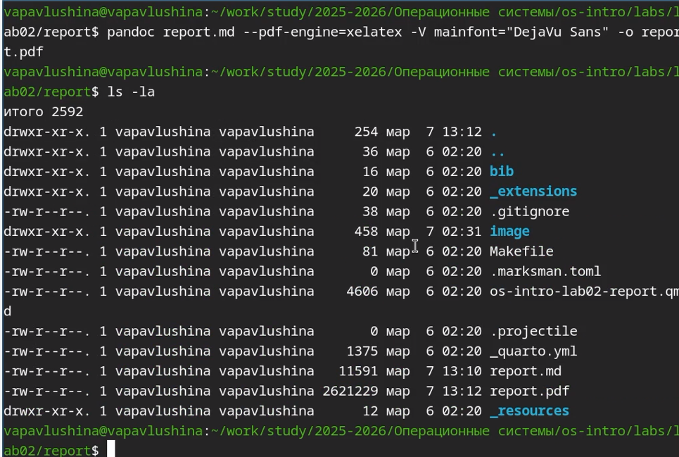
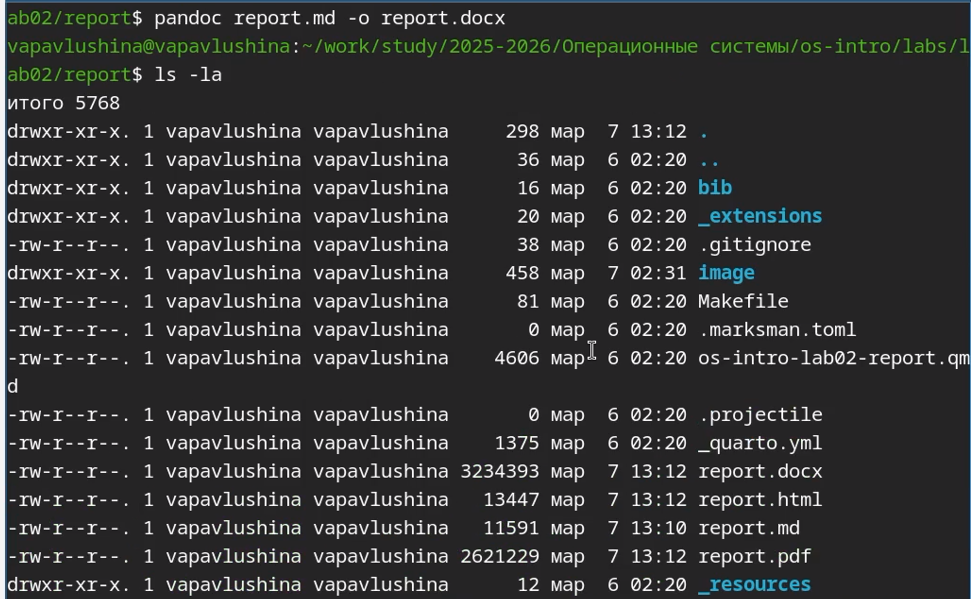
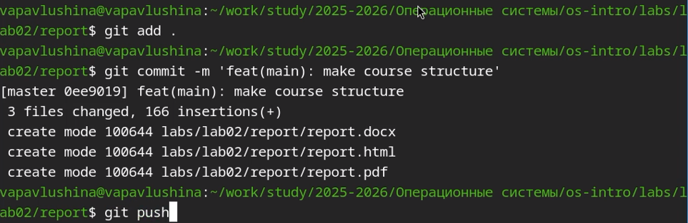

Информация
Докладчик
Вводная часть
Актуальность
- Стандарт индустрии: GitHub, GitLab и другие платформы для совместной
работы используют Markdown как основной язык оформления документации
(README.md). Это обязательный навык для любого разработчика или
исследователя, публикующего код.
- Универсальность: Один исходный .md файл можно легко преобразовать (с
помощью Pandoc и аналогичных инструментов) в конечный результат любого
формата: HTML (для веба), PDF (для печати/отчета), DOCX (для
редактирования) или презентацию. Это экономит время при подготовке
отчетов.
- Связь с системой контроля версий (Git): Markdown — это обычный
текст. Git идеально отслеживает изменения в текстовых файлах, показывая,
что именно поменялось от версии к версии. С бинарными файлами (например,
.docx) это работает гораздо хуже.
Объект и предмет
исследования
- Объект: Документ в формате .md
- Предмет: Markdown
Цели и задачи
Цель:Научиться оформлять отчёты с помощью легковесного языка разметки
Markdown
Задания: - Оформить отчёт по предыдущей лабораторной работе с
использованием синтаксиса Markdown. - Готовый отчёт необходимо
предоставить в трёх форматах: PDF, DOCX, MD . Файл следует упаковать в
архив, поскольку он должен содержать скриншоты, Mikefile и другие
сопутствующие материалы.
Материалы и методы
Выполнение работы
Выполнение лабораторной
работы
Заранее сделав скриншоты, приступаю к выполнению лабораторной работы
№3.
Создаю файл report.md и приступаю к редактированию.

Открываю файл и начинаю редактировать в соответствии с шаблоном.

Загружаю готовый отчёт в локальную репозиторий.

Конвертирую своим спобосом в pdf.

Конвертирую своим спобосом в docx.

Отправляю готовые файлы на сервер.

Выводы
Научилась оформлять отчёты с помощью легковесного языка разметки
Markdown.